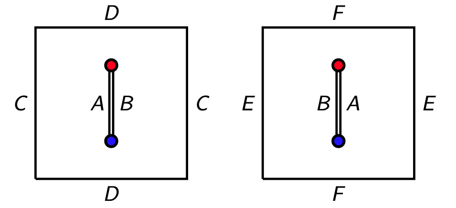

Summary of my thesis
Translation surfaces, other than the torus, possess singularities that can be considered as areas of high negative curvature. My thesis investigates the implications of this observation and demonstrates that various results that apply to negatively curved surfaces also have equivalents in the context of translation surfaces (aka flat surfaces).
Results
Kneading triangles converge to equilateral triangles
We begin with a fun result that emerged while working on result that follows.Various algorithms can be applied to a triangle to create a sequence of triangles, such as forming a new triangle by connecting the midpoints of the edges of the previous triangle. It has been proven that many of these algorithms will ultimately lead to an equilateral triangle, regardless of the initial triangle used. We introduce a new triangle algorithm, and show that this algorithm also leads to an equilateral triangle, regardless of the initial triangle used.

Equilateral triangles minimize entropy
Amongst negatively curved surfaces of a fixed area, the surfaces that minimize a relevant notion of entropy are those that are the most symmetric (those that admit a hyperbolic metric). We show that among certain natural sets of translation surfaces, those that can be tessellated by equilateral triangles have the lowest entropy. This can be considered a demonstration of a "universality phenomenon", where equilateral/hexagonal structures commonly appear as the optimal solution in various minimization problems, such as in beehives, particle configurations, and circle packing. We suspect that a more general result holds.
The prime number theorem for analogue closed geodesic on translation surfaces
The well-known Prime Number Theorem gives an asymptotic formula for the number of prime numbers smaller than a given bound. A similar formula also applies to the number of closed geodesics of length less than some bound on negatively curved surfaces. Alex Eskin presented a talk showing that this formula also applies to translation surfaces (joint work with Kasra Rafi), and we provided a written proof.

The distribution of large circles on translation surfaces
It has been established that on a negatively curved surface, as the radius of a circle increases, the circle becomes distributed in a natural way. We show that an analogous result applies to "circles" on Translation Surfaces, despite the unusual fractal shape of these circles.
